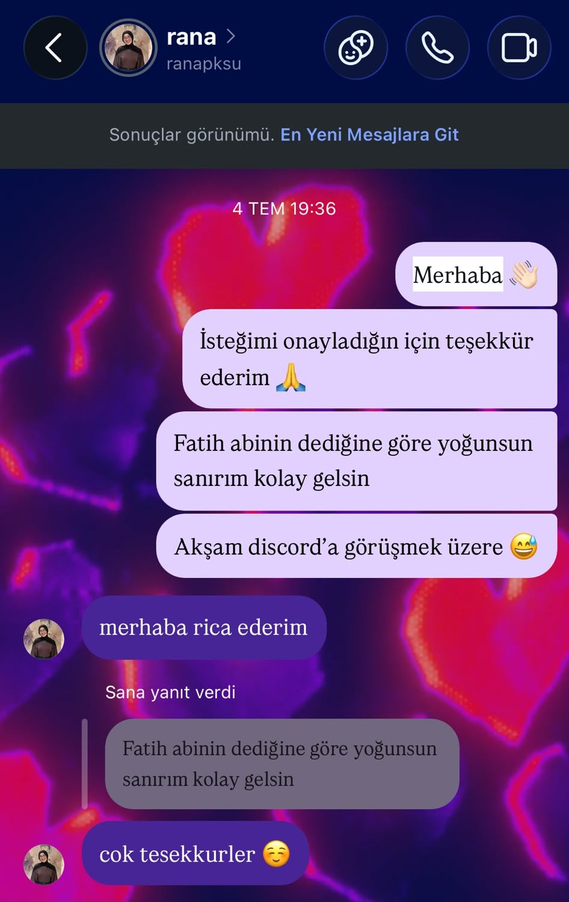
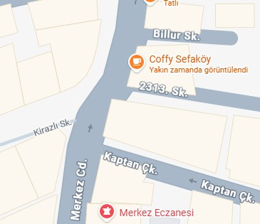
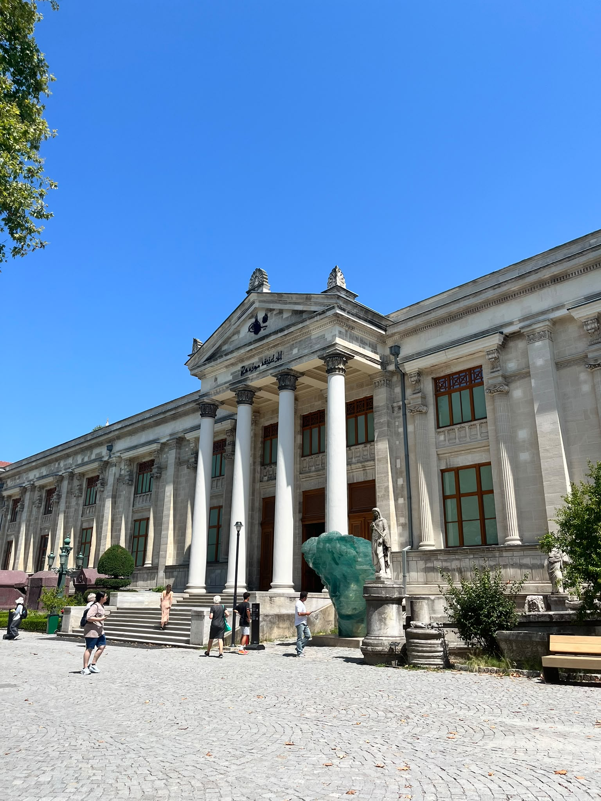
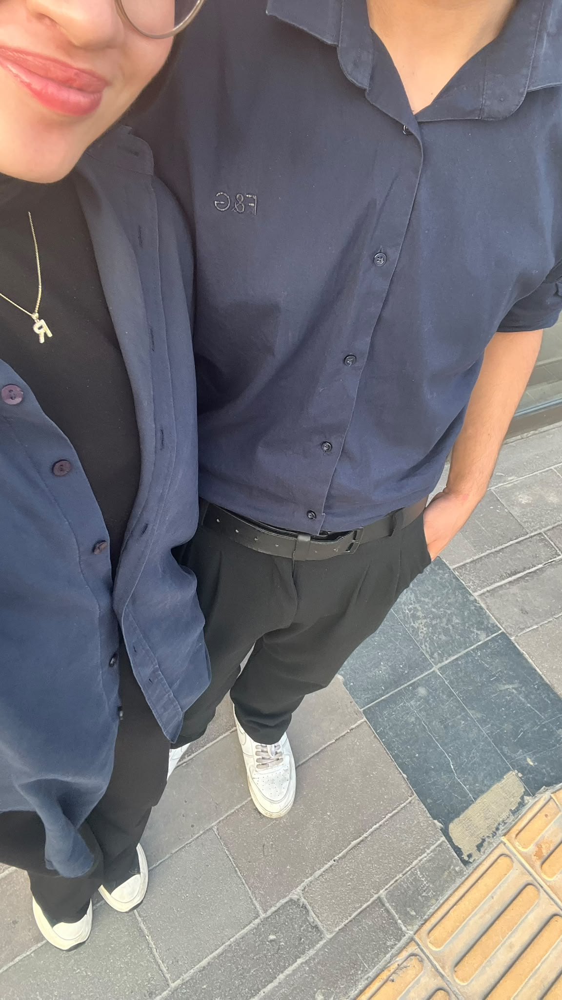

Her Şeyin Başladığı An
İlk mesajın geldiği o an... Hiçbir şeyin eskisi gibi olmayacağını o gün anladım. Kelimeler o kadar basitti ama kalbimde bıraktığı iz o kadar derindi ki.

Seni Tanıdıkça
İlk buluşmamızdan bir fotoğrafımız olmasa da, o günü hatırlamam için bir fotoğrafa ihtiyacım yok. Çünkü o günün bıraktığı his hâlâ benimle.

Eğlendik ve anı biriktirdik
Buluşmamızda ikimizin de eğlenceli müze senaryoları ve hareketleri vardı. O zamanlar ne kadar yeni tanışmış olsak da, seninle sanki dünyalar bana verilmiş gibi eğlendim. İkimiz de çocuklar gibi eğlendik ve gerçekten çok güzel bir gün geçirdik. Gerçi her günümüz, seninle beraber olduğum her an çok güzel. ❤️

ilk elini tutmaya çalıştım gün
O gün heyecanlı bir şekilde geldim. Ki bu her zaman böyle olacak, aşkımmm. ❤️ Ama o gün sinemada elini tutmaya çalışırken ellerim titredi, kalbim çok hızlı attı. Bir ara elini tuttum ve o an filmden biraz koptum. Çünkü benim asıl izlediğim sonsuz film sendin, balımmmm. 🥹❤️ O gün sanki dünyalar bana verilmiş gibiydi. Ama şimdi biliyorum ki benim dünyam zaten sensin, güzelimmmm. ❤️

Sonsuza Devam
Dün yaptığımız aktiviteler, konuşmalarımız, buluşmalarımız… Hepsi hep devam etsin, bitanem. Ömrümün sonuna kadar seninim, seninleyim ve senden başka hiçbir düşüncem yok. Sen ve ben, güzelimmm. ❤️ İnşallah hep mutlu oluruzzzz. Gerçi ben zaten seninle hep mutluyum, balımmmm. ❤️